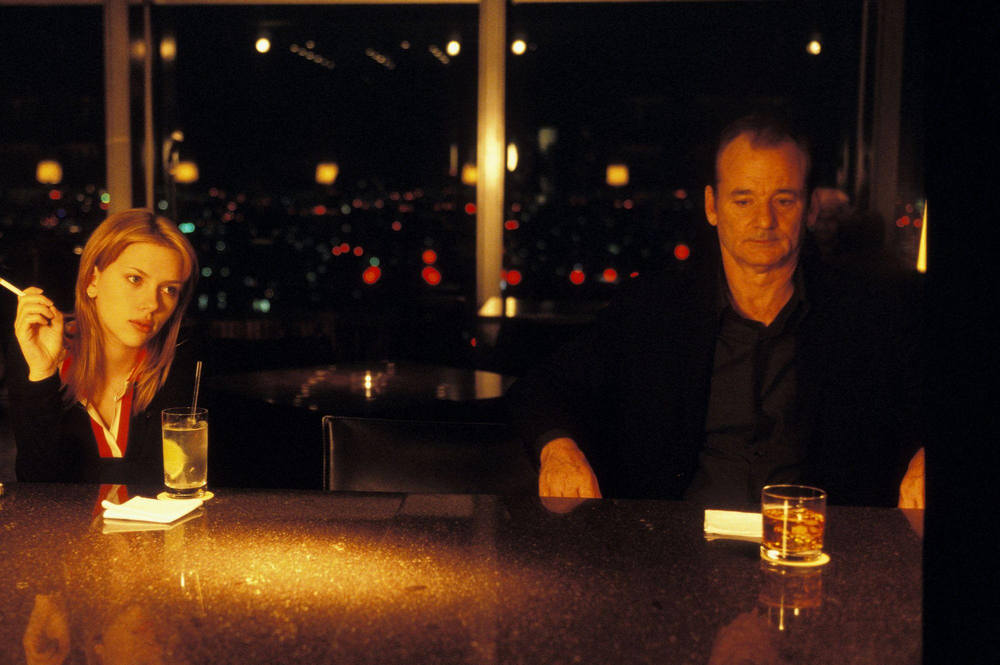
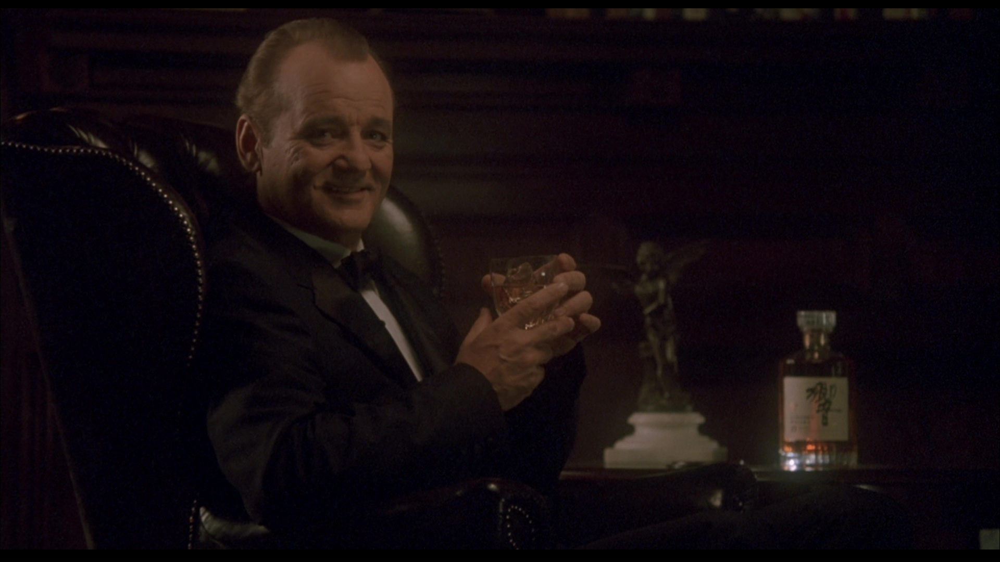
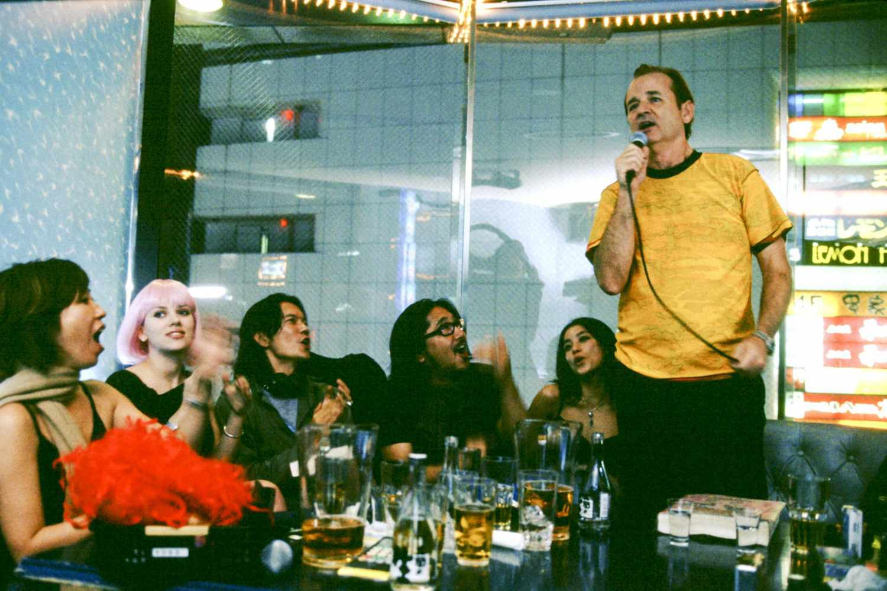
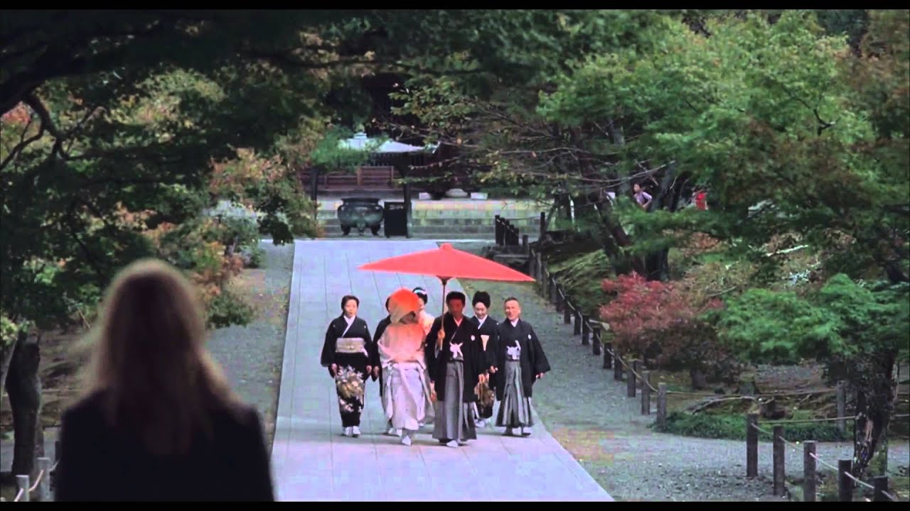
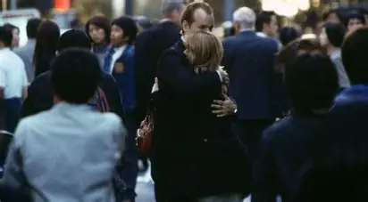

Escenas Destacadas
El Encuentro
Ambos sufren de jet lag y una profunda sensación de aislamiento en una ciudad cuya cultura y lenguaje les resultan ajenos. Se conocen en el bar del hotel y, a partir de ahí, surge una conexión inmediata.
Juntos empiezan a explorar el Tokio nocturno —desde karaokes y fiestas hasta templos silenciosos—, encontrando el uno en el otro el consuelo y la comprensión que no encuentran en sus propias parejas.

El Comercial Suntory
Bob Harris intenta grabar un anuncio de whisky bajo la dirección de un intenso y expresivo director japonés. La traductora reduce discursos apasionados de un minuto a simples instrucciones de dos palabras en inglés. Es una de las secuencias más cómicas de la película, pero ilustra magistralmente la desconexión total, la barrera del idioma y lo absurdo que le resulta a Bob su propia carrera y su vida en ese instante.

El Karaoke
Charlotte invita a Bob a salir por la noche con sus amigos. Terminan en una pequeña sala de karaoke bañada en una saturada iluminación de neón rosa y azul. Mientras cantan temas como "Brass in Pocket" y "More Than This", las miradas cruzadas a través de la sala dicen todo lo que los diálogos omiten. Es el punto de inflexión de la historia, donde la alienación de ambos desaparece temporalmente gracias al poder unificador de la música y la estética nocturna de la ciudad.

El viaje a Kioto
Buscando un respiro de la opresión de su habitación de hotel, Charlotte toma un tren bala hacia los antiguos templos de Kioto. La secuencia es casi muda, apoyándose puramente en la fotografía y el sonido ambiente. Vemos a Charlotte paseando por jardines bajo la llovizna y observando a lo lejos una boda tradicional. Funciona como un contraste visual absoluto entre el caos eléctrico y publicitario de Tokio y la calma contemplativa que ella está buscando para su propio futuro.

La despedida
En su camino al aeropuerto para volver a casa, Bob ve a Charlotte caminando entre la multitud en una calle bulliciosa de Shinjuku. Se baja de su taxi, corre a buscarla y se abrazan. Bob le susurra algo al oído que el espectador no logra escuchar debido al ruido ambiente de la ciudad, seguido de un beso de despedida. El brillante uso del diseño sonoro nos deja fuera del secreto intencionalmente, convirtiendo el clímax de la película en un momento íntimo y exclusivo de los personajes.
